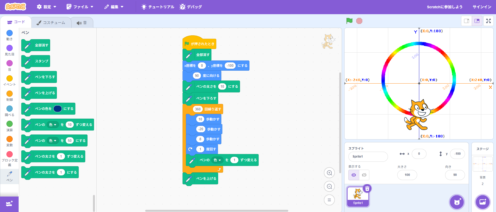
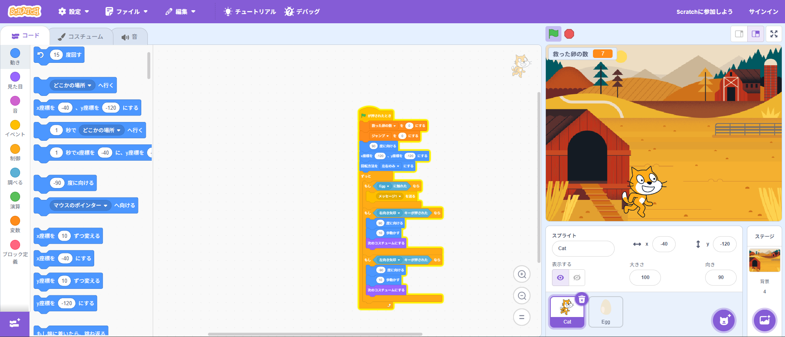

1週目のレポート ： 公大高専１年実習I-1
1b班33番 OceanArrow-283
第1週目
1-1 サイエンスアート

1.内容
プログラミングソフトであるスクラッチに、ペンの拡張機能を追加したものを用いて、猫が虹色の輪を描くようなプログラムを作成した。
2.感想
スクラッチは以前にも触れたことがあり、また、前回の実習でほとんど同じ操作感のプログラミングツールを使用していたこともあり、
すいすいとプログラミングができ、とても楽しかった。
1-2 ゲーム

1.内容
スクラッチを用いて、猫が上から落ちてくる卵をキャッチするようなゲームを作成した。
乱数を用いて、卵の落ちてくる位置や速さをランダムに設定している。また、変数を用いて、救った卵の数がわかるようになっている。
2.感想
すいすいとプログラミングができたのはもちろん、卵が地面に落ちた時に卵が割れるようなプログラムを追加したり、
プログラムを作り直して猫の動きをスムーズにしたりと、自分のやりたいことができたため、達成感が得られた。
1-3 ホームページ作成
私のホームページ
1.内容
Githubを用いてホームページを作成し、ホームページの内容を編集して、自己紹介のホームページを作成した。
2.感想
ホームページを作成したり、作成したホームページを編集したりするのは、なんとなく難しそうだと思っていたが、
かなり簡単にできてしまったため、とても驚いた。
各ページへのリンク
1週目のレポート
2週目のレポート
3週目のレポート
私のホームページ